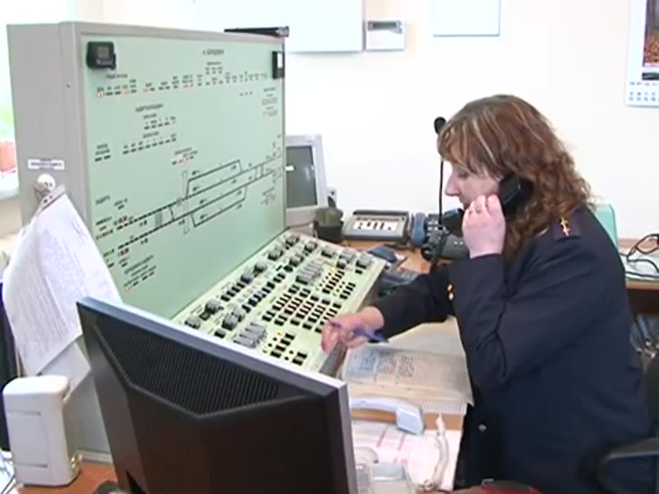
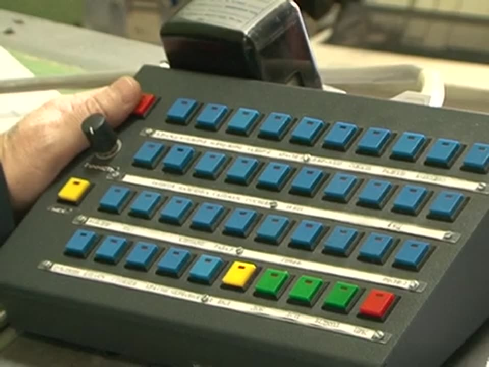

Черговий по станції (ДСП) одноособово розпоряджається прийманням, відправленням і пропуском поїздів та маневровою роботою на станції. З питань руху він підпорядковується поїзному диспетчеру (ДНЦ) і виконує його накази.
Навчальний фільм


Приймання чергування
ДСП приходить на роботу вчасно, після інструктажів з безпеки руху та охорони праці. Приймаючи чергування, він повинен:
- Ознайомитися з поїзним положенням: планом роботи, вказівками щодо приймання й відправлення поїздів і маневрів, розташуванням рухомого складу на коліях, вільністю чи зайнятістю прилеглих перегонів. Вільність перевіряють за приладами пульта, записами в журналі руху ДУ-2, а при телефонних засобах — у журналі поїзних телефонограм ДУ-47.
- Перевірити пристрої: справність приладів управління СЦБ за контрольними приладами, засобів зв'язку, наявність пломб згідно з описом, справність стрілок, які він обслуговує особисто.
- Записати несправності, якщо вони є, у журнал огляду ДУ-46 і викликати працівників, що обслуговують пристрої (електромеханіка СЦБ, колійного майстра).
- Перевірити інвентар: інструмент, сигнальне приладдя, інвентар суворого обліку згідно з описом.
- Ознайомитися з записами в журналах ДУ-2, ДУ-58, ДУ-60, ДУ-47 та інших з питань руху.
- Оформити вступ на чергування записами в журналах.
Записи про вступ на чергування
Журнал руху поїздів ДУ-2
Показання лічильника запрошувального сигналу «Ч» — 2835
«13» жовтня 2026 року о 08 год 00 хв чергування прийняв ДСП Коваленко (підпис)
«13» жовтня 2026 року о 08 год 00 хв чергування здав ДСП Мельник (підпис)
Інвентар згідно з описом: в наявності
«13» жовтня 2026 року о 08 год 00 хв чергування прийняв ДСП Коваленко (підпис)
«13» жовтня 2026 року о 08 год 00 хв чергування здав ДСП Мельник (підпис)
Інвентар згідно з описом: в наявності
Журнал попереджень ДУ-60 (якщо попереджень немає)
«13» жовтня 2026 року о 08 год 00 хв чергування прийняв ДСП Коваленко. Діючих попереджень немає.
Журнал диспетчерських розпоряджень ДУ-58 (якщо наказів немає)
«13» жовтня 2026 року о 08 год 00 хв чергування прийняв ДСП Коваленко. Діючих наказів немає.
Одразу після вступу
- Перевірити наявність працівників зміни на робочих місцях (чергових стрілочних постів, операторів при ДСП, оглядачів вагонів, диктора).
- Через них перевірити стан робочих місць і правильність закріплення рухомого складу згідно з ТРА.
- Доповісти поїзному диспетчеру про вступ на чергування.
Обов'язки під час чергування
- Керує прийманням, відправленням, пропуском поїздів і маневровою роботою.
- Дає розпорядження коротко, чітко, за регламентом переговорів, з точним виконанням ПТЕ, ІСІ, ІРП і ТРА; вислуховує повторення.
- Готує маршрути особисто з пульта ЕЦ або через операторів і чергових стрілочних постів.
- Веде журнал руху ДУ-2, записує накази ДНЦ у ДУ-58, видає попередження за ДУ-60.
- Повідомляє ДНЦ і сусідні станції про прибуття й відправлення поїздів.

Здача чергування
Перед здачею ДСП повинен:
- розмістити рухомий склад на коліях згідно з їх спеціалізацією;
- особисто перевірити, що рухомий склад стоїть у межах корисної довжини колій і закріплений;
- ознайомити змінника з поїзним положенням і розпорядженнями ДНЦ.
Порядок записівЗдача чергування оформлюється в журналах тільки після того, як змінник зробить запис про приймання чергування.
Перевір себе
Якими документами керується ДСП?
ПТЕ, ІСІ, ІРП, ТРА станції, місцевою інструкцією про користування пристроями СЦБ і зв'язку, Статутом про дисципліну, регламентом переговорів.
Де ДСП записує виявлені при прийманні чергування несправності?
У журналі огляду колій, стрілочних переводів, пристроїв СЦБ, зв'язку та контактної мережі ДУ-46.
Які журнали ДСП перевіряє, приймаючи чергування?
ДУ-2, ДУ-58, ДУ-60, ДУ-47 та інші з питань руху.
Коли оформлюється здача чергування?
Тільки після запису змінника про приймання чергування.